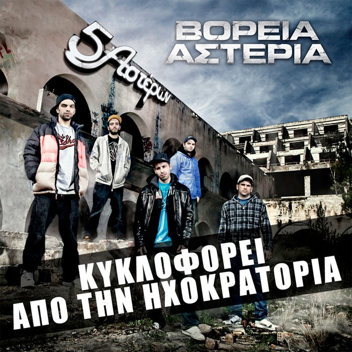

E-SHOP
| Αρχική
| Μέλη
| Iστορία
| Δισκογραφία |
Η Δισκογραφία μας
"Χαλαρά"
2003
"Χαλαρότερα"
2004
Οι δυο επόμενοι δίσκοι του συγκροτήματος μας ήρθαν αρκετά χρόνια αργότερα, πιο συγκεκριμένα το 2010,
προκαλώντας "ΧΑΜΟ" στην ελληνική Χιπ-Χοπ και Ραπ σκηνή καθώς είχαν μεγαλη απήχηση.
"Τα αυθεντικά της πόλης"
2010
"5 Αστέρων"
2010
